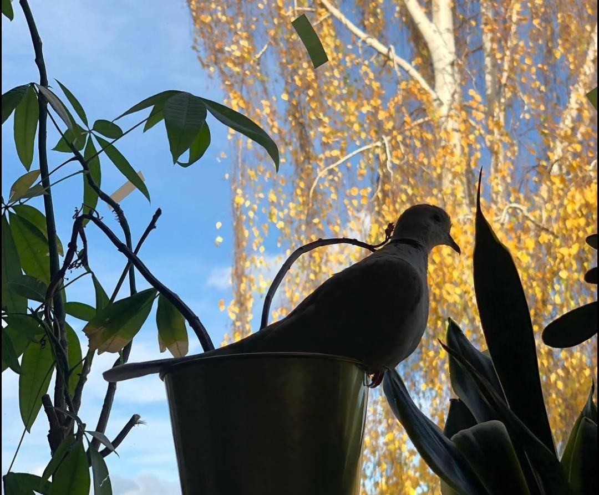
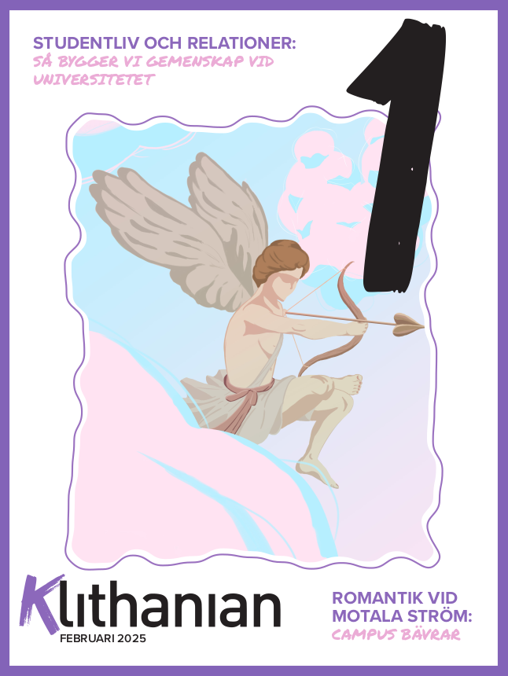
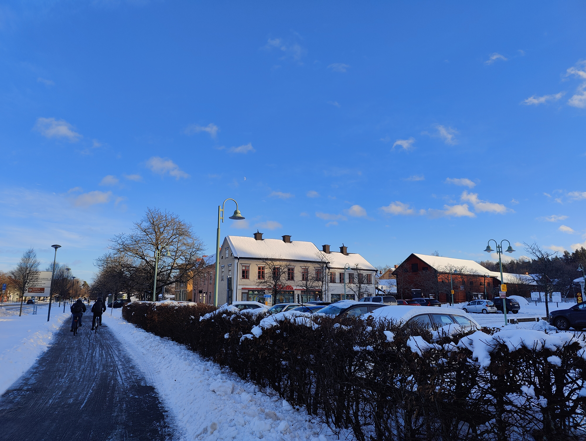
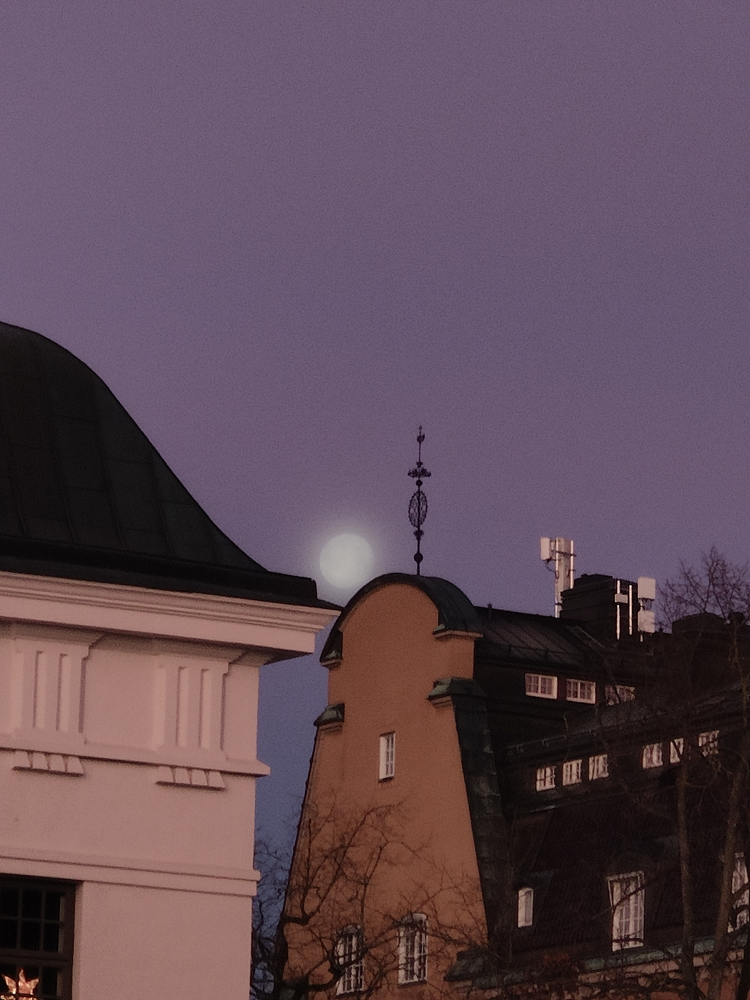
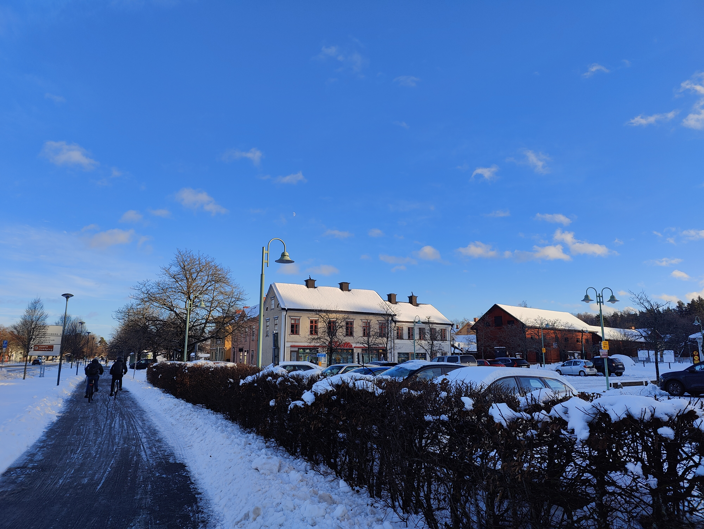
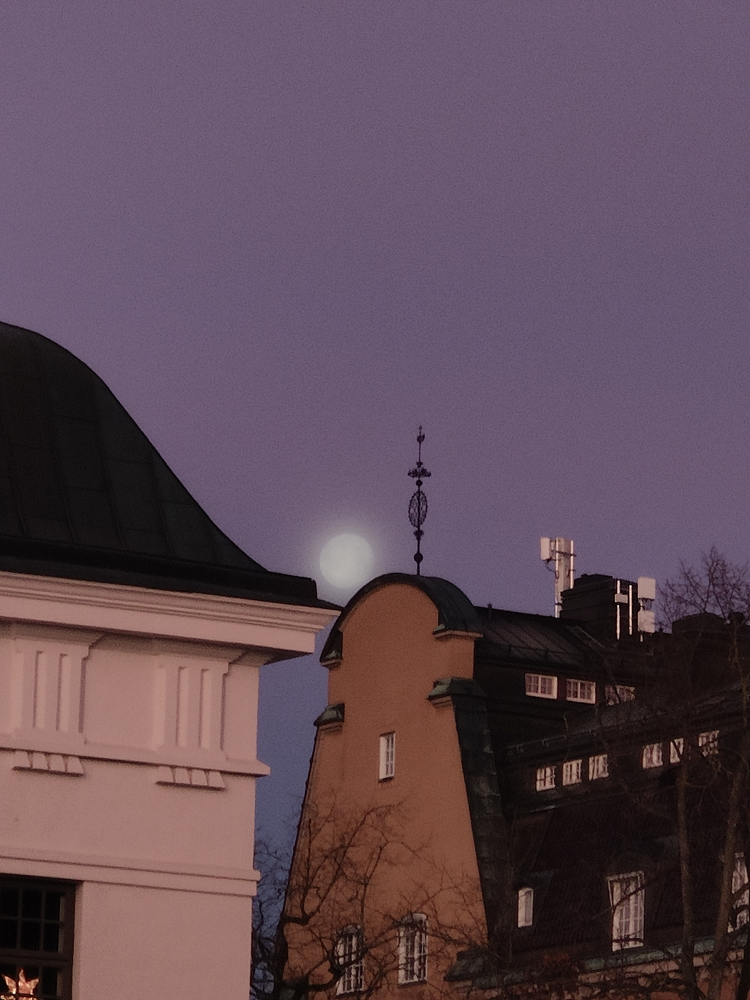

Life has been quite hectic lately. I've been moving to a new place, starting a full-time job, increasing my involvement in organizational work and finalizing my masters thesis. Unsurprisingly, all of this has led to some stress-related health issues. Fortunately, I'll be traveling to the U.S. early next month for a week-long stay. I'm hoping this trip will give me a chance to relax and recharge. On a brighter note, my birds seem to like it in the new apartment! :-)
What are you doing?
This is a now page. If you have your own site, you should make one, too!
My life is often busy, and I've been somewhat secretive when sharing details with family and friends. I thought this would be a great way to keep everyone updated on what I'm currently doing. I'll do my best to keep this page updated with any new happenings. Thank you, Phillip Ridlen, for inspiring me with your now page!
This was what I was doing as of January 27 2025
This was what I was doing as of December 27 2024
This is what I am doing now
Life 🌟

Education 🎓
I've finally received feedback from my examiner on my masters thesis, resolved all the issues and got the green light to schedule my final presentation. I booked it for February 3rd and received confirmation. It turns out that my opponent, who is based in Germany, wasn't able to complete her auscultations in time. So, now, I'm desperately looking to find a replacement opponent.
Work 💼
I've been a developer on the MiniPay project at Opera for two weeks now, and I absolutely love it. While my past experience with Java/Android wasn't great, working with Kotlin/Android and Jetpack Compose has been fantastic. I've already implemented a few features that are now live in the version available on the App Store. There's so much exciting stuff happening with the app — stay tuned and be sure to download it from the App Store!
Organizations 🏢
My ethical hacking organization is in full swing preparing for our upcoming CTF event in early March. We're thrilled to have secured sponsorships from three companies — SECTRA, Sylog and SICK — huge thanks to them for their support! Alongside the CTF, we're partnering with Donna, the organization for women and non-binary individuals in computer-related programs at LiU, to host two workshops. We're incredibly excited about this collaboration. Right now, our biggest challenge is developing all the custom made exercises for the CTF. We're aiming for around 50 challenges and progress is looking promising. We've also finalized a graphical profile and even created a mascot, although it's still nameless for now. Even better news: we've achieved “LUST-godkänd” status, meaning we'll now receive extra support from the university and its unions!

As Editor-in-Chief of LiTHanian, I've had to prioritize it a bit lower than some of my other commitments recently. That said, I'm happy to share that today we're sending our Valentine's Day-themed magazine to the printing company, and it will arrive in our members mailboxes just in time for Valentine's. The editorial team has worked incredibly hard on this issue, and I couldn't be prouder of them!
Hobby Projects ⚙️
For me, having hobbies outside of studying and working is very important. My main hobbies are programming, photography, music, and writing.
I've been working on a few small programming projects, most of them related to movies. I've been toying with the idea of creating a website similar to Last.fm, but for movies. I've started prototyping some styling concepts. The idea is to potentially connect it to APIs like Netflix and similar services to track the movies you've watched. The placeholder name for the project is cast.fm.

 





When it comes to photography, I've been in front of the camera quite a bit lately for various press-related projects, but I haven't had much time to do any professional photography myself. However, I've been making an effort to spend more time outdoors to unwind and go for walks. During these walks, I've taken a few photos — just for fun and relaxation.
In terms of music, I've set a goal to produce a modular synth album by the end of the year. Since I'm now exclusively using Linux based machines, getting everything set up has been quite a challenge. I'm currently using Yoshimi and MusE, wired together with Qjack, but getting it all to work smoothly has been troublesome. I'm considering partitioning my hard drive to run a dedicated music focused OS, so I can avoid spending so much time compiling software and dealing with setup issues.
Aside from the articles I've written for LiTHanian, I haven't had much time to focus on other writing projects. I'd love to get back to working on my script, but it's so time consuming that it will likely have to wait until I'm in the U.S. In the meantime, I've been journaling and even managed to start writing some blog posts again, so I haven't abandoned writing entirely.
Expert Progress 📈
The concept of reaching 10,000 hours to become a professional or an expert in a field is derived from Malcolm Gladwell's book "Outliers: The Story of Success" Gladwell popularized the idea that achieving a high level of proficiency in any field typically requires about 10,000 hours of dedicated practice. This notion is based on the research of psychologist Anders Ericsson, who studied the practice habits of elite performers in various domains.
I've been tracking my programming time since 2019, so these numbers are based on that data. The actual total is likely higher, considering I wrote my first program in 2012! Please note that I include this jokingly; I don't necessarily believe in the idea of becoming an expert after 10,000 hours. I haven't given it much thought, and I certainly don't feel like an expert yet.